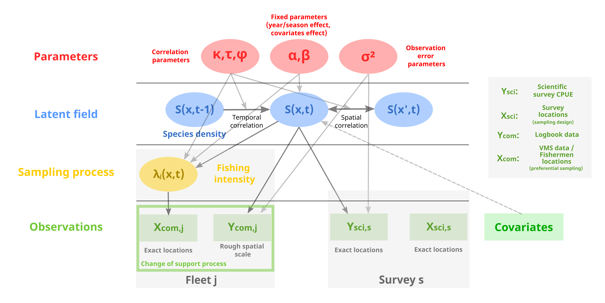
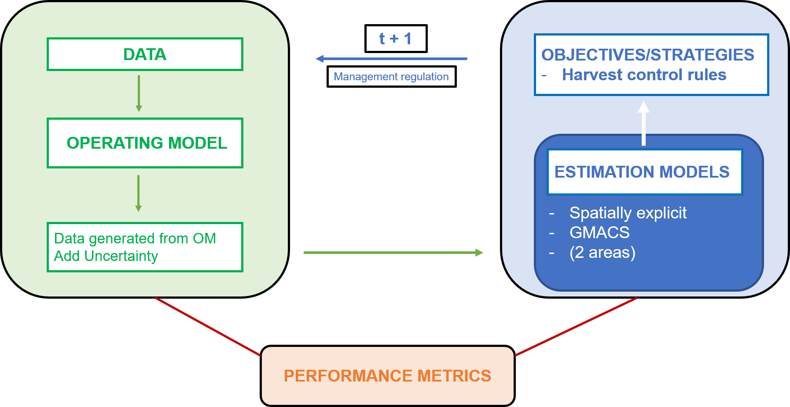
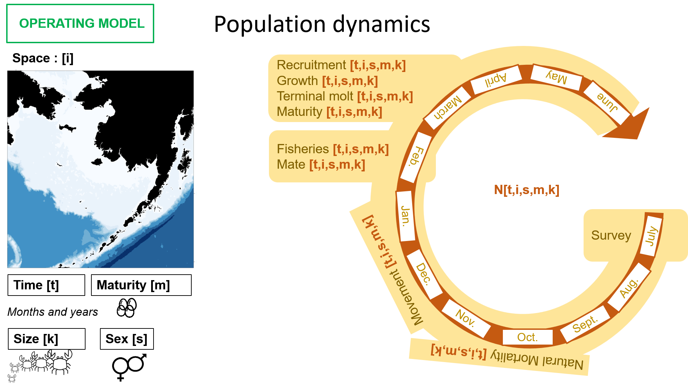

Research interests
This is currently being updated
FishMap
Conceptual framework
This model was first developed for fisheries applications, but it could find applications in many other fields of application such as ecology, health science, epidemiology or climate science.
To map fish biomass distribution in space and time (\(S(x,t)\)) based on commercial catch declarations (\(Y_{com}\)) data and scientific survey data (\(Y_{sci}\)), we developed a hierarchical integrated framework that fits both data sources (with potentially several commercial fleets \(j\) and several surveys \(s\)) while accounting for the sampling specificities of catch declarations data.
First, fishing locations \(X_{com}\) are sampled preferentially in areas of higher biomass. This requires to handle preferential sampling in the model to provide unbiased predictions of species distribution. To do so, the fishing locations are modeled as an homogeneous Poisson point process whose intensity \(\lambda(x,t)\) is related to the biomass field \(S(x,t)\). This part of the model is described in Alglave et al. (2022) and Alglave et al. (under review).
In addition, catch declarations data are declared at a rough scale while predictions of species distribution are required at a finer resolution for spatial management. Such issue is often referred as a problem of change of support in the statistical literature. The related method is described in Alglave et al. (under review).
At the moment, each challenge (preferential sampling and change of support) are tackled separately when fitting the model. The next step is to deal with both processes when estimating the parameters.

Operational applications
MACCO project
Aim of the project: Identification of the target species and by-catch of the Bay of Biscay mixed fishery and evaluation of alternative management strategies.
Head of the project: Stéphanie Mahévas (Ifremer Nantes).
Contribution: production of monthly species distribution maps for the main targeted and by-caught demersal species of the Bay of Biscay. link
EWG 22-01 - West Med closure areas (2022)
Aim of the WG: identifying and evaluating the potential closure areas for the demersal species of the Western Mediterranean Sea.
Contribution: production of monthly species distribution maps for key data-poor species of the Bay of Biscay.
ACLIM
MSE for the Snow Crab of the Bering Sea

